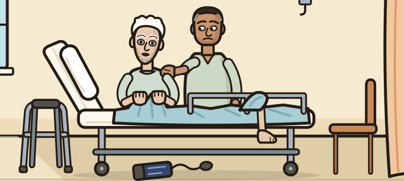
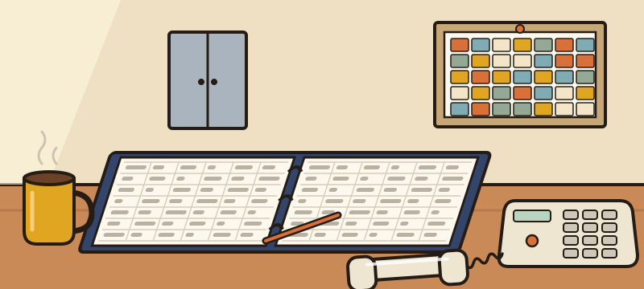

Not himself.
Thursday, 15:05 · Medical assessment
Sent in from Hazelgarth Nursing Home on the advice of his GP surgery.
Ambulance sheet: “Staff report new confusion and aggression. Hit a carer this morning.”
Arrived 14:20, alone. No letter. No medication list.

- 1He cannot tell you anything. Ring the home: one call, and it costs ward time like everything else.
- 2Examine him, then investigate. Five core systems and five bedside tests are a tap. Everything else you type, the way you would ask for it.
- 3Say what is going on, write his plan as you would in the notes, and hand over for the night.
The call

Five core systems are one tap. Everything else is typed — there is no menu, and choosing where to look is the examination.
Nothing is listed — type the examination you want, the way you'd say it on the ward.
Five bedside tests are on the trolley. Everything else — bloods, swabs, imaging, records — is ordered on ICE: type it the way you would at the terminal. Build a round, send it; the clock jumps by the slowest test. Anything else you want done, ask for it by name.
You've called it. Now write the plan — free text, the way you'd write it in the notes. Nothing is listed; what you write is what gets done.
His diagnoses
Commit up to three. Pick each from the list.
Friday morning
Eight questions
One at a time, thirty seconds each.